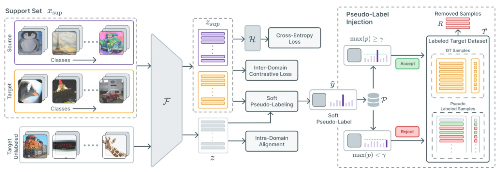
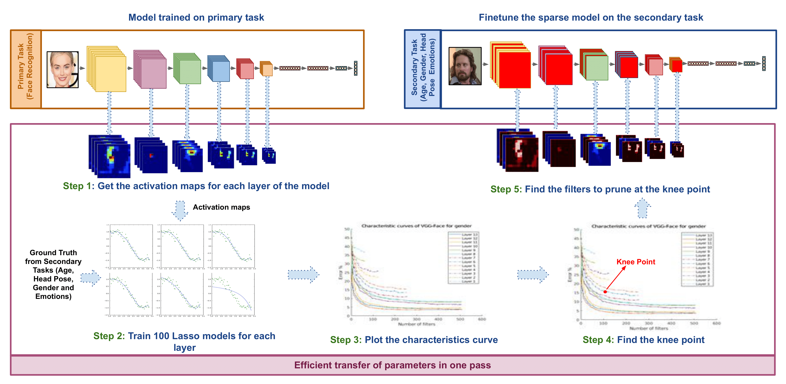
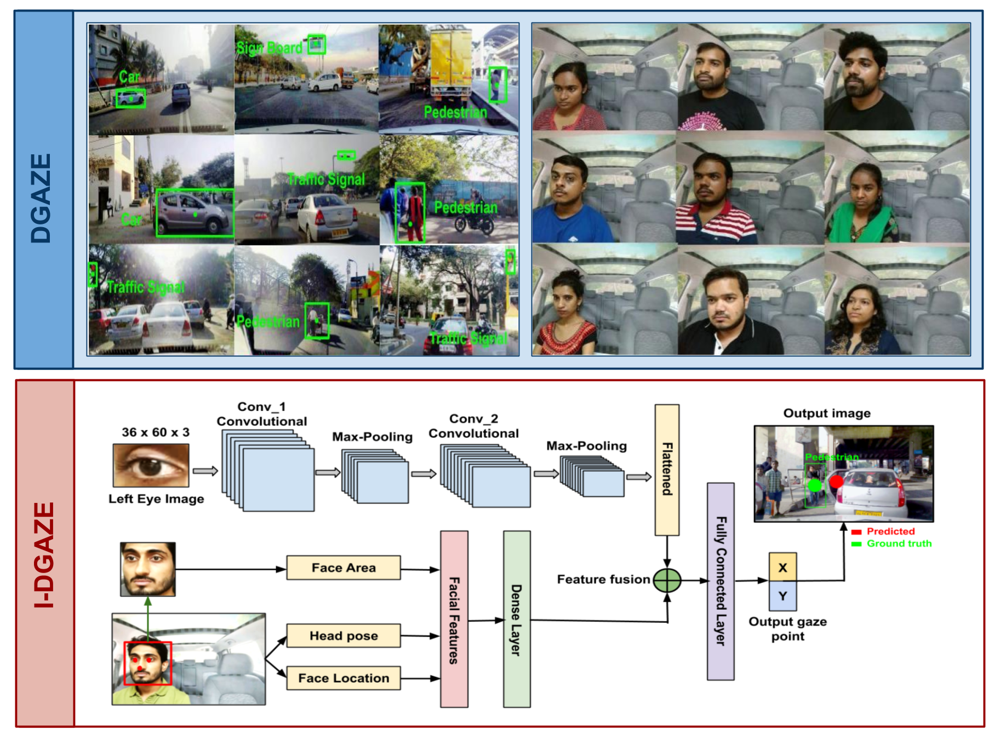
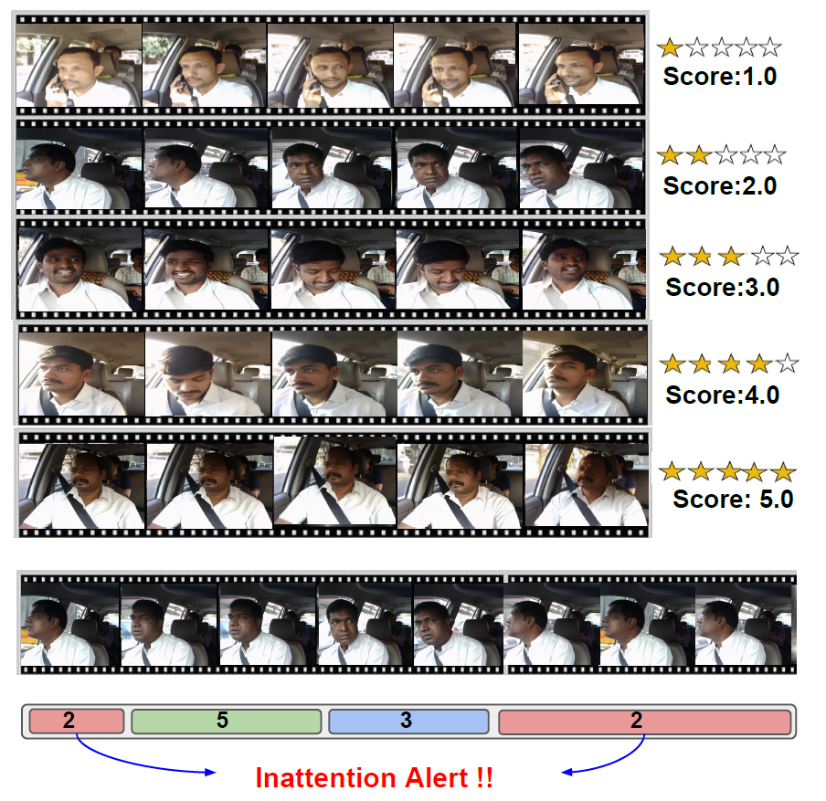
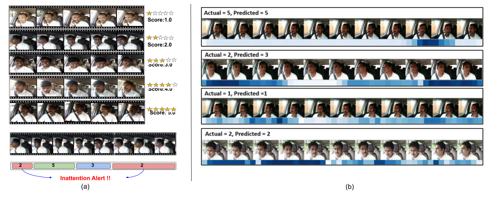
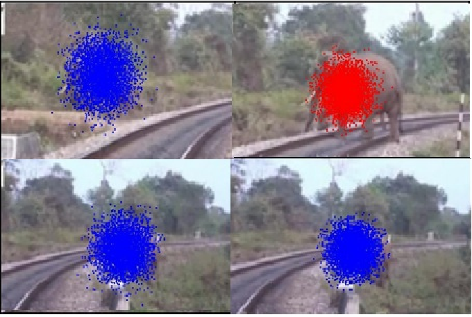
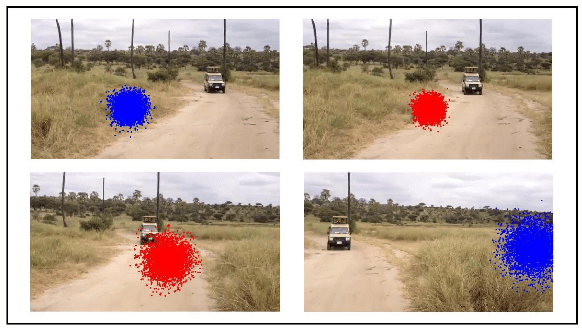

Patent Award 2022
I was rewarded an award in "Patent Rewards Category" during innovation week 2022 at Mercedes Benz for our filed patent on
"System for improving keypoints location and method thereof"
Process Innovation Award 2022
I was rewarded an award in "Process Innovation Category" during innovation week 2022 at Mercedes Benz for our implemented
innovation on "Multiperson Human Pose Estiamtion using synthetic dataset"
Process Innovation Award 2021
I was rewarded an award in "Process Innovation Category" during innovation week 2021 at Mercedes Benz for our implemented
innovation on "Accelerated deep learning framework for efficient and faster training"
Silver Star Award 2021
I was awarded with silver star award from my manager
Brijesh Pillai for my contribution in developing the accelerated
deep learning library and for the work on bridging domain gap between synthetic and real domains
First prize at Google Hackthon 2018
I won the first prize in the ML track at Google Hackthon 2018.
Here I worked on waste segregation problem using Machine Learning and Deep Learning.
Outstanding mentor award at Foundation of AIML course 2018
This award was given to me for assisting in teaching machine learning to industry folks.
The course was taken by Prof C.V.Jawahar and Prof Anoop Namboodiri.
First prize at Microsoft.code.fun.do 2018
Microsoft code fun do is hackthon organized by Microsoft and focus on building applications useful for people.
I contributing by building game which can be be played using eyes as input.
Other uses include provided basic use of technology for paralized people using eyes and computer screen,
Medical Research and extra feedback through eyes for E-commerece field.
Sixth prize at India Hacks 2017
This was hackthon organized by Hacker Earth. Here I worked estimating the breathing rate
and pulse rate using AI and Machine Learning.
Other Achievement includes
- First position in college, BTech First Year
- Third position in CSE department, BTech Third year
- Second position in CSE department, Btech Forth Year
|  |
Semi-Supervised Domain Adaptation by Similarity based Pseudo-label Injection.
Abhay Rawat, Isha Dua, Saurav Gupta and Rahul Tallamraju
Accepted at ECCV, 2022 Workshop
Paper
/
Code
To align the two domains, we leverage contrastive losses to learn a semantically meaningful and
a domain agnostic feature space using the supervised samples from both domains. We further use the pseudo-label
approach to gradually inject the unlabeled target samples into training by comparing
their feature representation to those of the labeled samples from both the source and target domains.
|
|  |
ETL: Efficient Transfer Learning for Face Tasks.
Thrupthi Ann John, Isha Dua, Vineeth N Balasubramanian, C. V. Jawahar
Accepted at VISIGRAPP, 2022
Paper
/
Project Page
/
Video
In this paper, we propose a technique that efficiently transfers a pre-trained model to a new task
by retaining only cross-task aware filters, resulting in a sparse transferred model. We demonstrate
the effectiveness of ETL by transferring VGGFace, a popular face recognition model to four diverse face tasks.
|
|  |
DGAZE: Driver Gaze Mapping on Road.
Isha Dua,
Thrupthi Ann John, Riya Gupta, C. V. Jawahar
Accepted at IROS 2020
Project Page
/
Paper
/
Dataset
DGAZE is a new dataset for mapping the driver's gaze onto the road. We collected 7 unique objects on road.
For each driver we collected 103 such objects. We provide both point and object annotations for driver gaze on road.
|
|  |
Autorate: How attentive is the driver?.
Isha Dua, Akshay Uttama Nambi, Venkat Padmanabhn, C.V.Jawahar
Accepted as Oral Paper in FG2019
Paper
AutoRate is a system that leverages front camera of a windshield-mounted smartphone to
monitor driver’s attention by combining several features.We derive a driver attention rating
by fusing spatio-temporal features based on the driver state and behavior such as he head pose,
eye gaze, eye closure, yawns, use of cellphones, etc.
|
|  |
Evaluation and visualization of driver inattention rating from facial features.
Isha Dua, Akshay Uttama Nambi, Venkat Padmanabhn, C.V.Jawahar
Accepted as Journal paper at TBIOM, IEEE Biometrics 2019
Paper
In this work, we propose soft attention mechanism in AutoRate which improves AutoRate’s accuracy by 10%.
We use temporal and spatial attention to visualize the key frame and the key action which justify the model’s predicted rating.
|
|  |
A Computer Vision Framework for Detecting and Preventing Human-Elephant Collisions.
Pushkar Shukla, Isha Dua, Ankush Mittal, Balasubramanian Raman
Accepted at ICCV, 2017, Workshop
Paper
/
Poster
/
Presentation
The paper proposes a frame-work that relies on computer vision approaches for detecting and preventing Human Elephant Collision.
The technique initially recognizes the areas of conflict where accidents are most likely to occur.
This is followed by elephant detection system that identifies an elephant in the video frame which is then tracked
with respect to the area of conflict with a particle filter algorithm.
|
|  |
A vision based human - elepahant collision detection system.
Isha Dua, Pushkar Shukla, Ankush Mittal
Accepted at ICIIP, 2015
Arxiv
The proposed paper seeks to identify elephants with the aid of a Video Camera.
The suggested methodology was applied to zones having high intervention of human beings and elephants.
Regions with higher human movements like roads were extracted from the initial video frames.
This process is followed by detecting motion in the video frame. The objects in the area of
motion are then identified as elephant or non-elephant with the help of PHOG features and
Support Vector Machines (SVM) classifiers..
|
Eye Gaze Gaming
supervised by Professor C.V.Jawahar
The project focuses on developing web camera based first person shooter game.
It provides advance gaming technology to play video games using head pose and eye gaze.
Also, extended the algorithm for browsing articles.
[Demo video]
/
[poster]
/
[presentation]
|
Breathing Rate using camera
work done at India Hacks, 2017
It is computer vision project in which using the camera which can be web camera or mobile camera,
the breathing rate of the person can be determined.
|
As-Projective-As-Possible Image Stitching with Moving DLT
supervised by Professor Anoop Namboodiri
The focus is on the task of image stitching by proposing as-projective-as-possible (APAP) warps,
i.e., warps that aim to be globally projective, yet allow local non-projective deviations to account for
violations to the assumed imaging conditions.
|
Classification of book genre by cover and title:
supervised by Professor Avinash Sharma
The project use particle filtering algorithm to track elephants and prevent human elephant collision. Using pattern recognization
approaches like Multi class-SVM , neural networks etc to distinguish books into different genre purely based on cover and
title without aprior knowledge of context,author or origin.
|
Animation Effects using Image Morphing
supervised by Professor Vineet Gandhi
Using Triangulation method to do morphing between human faces . The idea is to get a sequence of
intermediate images which when put together with the original images would represent the change from
one image to the other.
|
Design and source code from Jon Barron's website .
|
{kind=link}